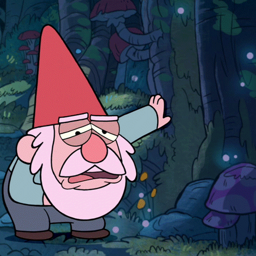

Hoy, un dia del año donde todavía se sigue vivo, recordé un método donde me volvia a sentir feliz, al soñar, el estar en un mundo imaginario. En mi mente esa es la razón por la que soy tan impuntual, prefiero estar màs horas soñando que soy feliz que despierto en esta ilusión de realidad. ¿Quien nos dice cual es la realidad y cuál es el sueño?
Es suficiente este limbo de existencia, a veces no diferencio cual es cual ya que en ninguna soy feliz, me siento vacío, sin razón para continuar, ¿por que luchar por levantarme cada dia?, vale la pena?. Creo que ya vi lo que tenía que ver, mis padres están bien al igual que mi hermano. Mis mejores amigos (mascotas) ya se fueron, extraño el tiempo en que podía pensar y buscar una solución con tranquilidad. El ser feliz nose que significa creo que es una ilusión o una mentira ya decidida por ti para no caer en prejuicios, para poder introducirse en un grupo social. Es necesario mentir, aparentar, para ser incluido y aceptado; Para ser alguien.
Tomo 3

El ser humano por naturaleza quiere estar acompañado ya sea por necesidad biológica o herencia cultural, tratar negar estos sentimientos o ignorarlos causa desórdenes mentales, el cuerpo humano entra en un estado de autodestrucción en el cual no puedes escapar a menos que recibas ayuda profesional. No tengo deseos suicidas, me parece que el suicidio no soluciona nada y tal vez genera más problemas. extraño la oportunidad que tuvimos de ser diagnosticados como locos.